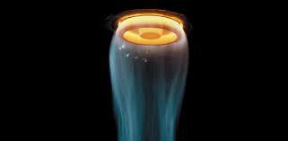
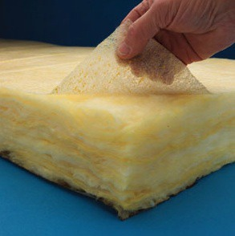
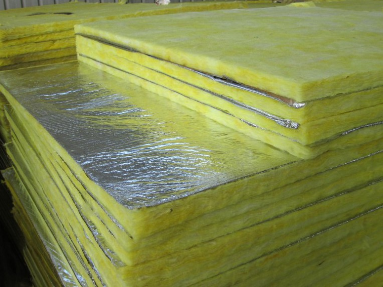

그라스울은 규사, 석회석, 장석, 소다회 등 글래스계 광물질을 주원료로 만들어진 단열재로 가는 유리섬유 덩어리 사이에 공기가 밀봉되어 단열효과를 발휘합니다.

용융(melting)후 섬유화(fiberizing) 과정
다만, 폐유리를 고온에 녹인 후 섬유처럼 뽑아내 만든 것으로 맨손으로 만지면 따가움을 느끼게 되어 인체 유해성에 대한 논란이 끊이질 않는데요. 그점에 대해서는 그라스울의 섬유크기가 호흡기로 들어가기에는 큰 구조이기 때문에 인체에 접촉하여 아픔을 줄 수는 있으나, 체내에 유입되기 어려워 인체에는 유해하지 않다는 의견이 지배적입니다.
그라스울은 단열성(열전도율 0.040W/mK 내외) 외 불연성(용융점 약500℃), 흡음성, 시공성, 운반성이 우수한 반면, 압축이나 침하에 의한 유효두께의 감소나 함수에 의한 단열성 저하의 위험이 있습니다.
(※그라스울판넬의 경우 수분흡수시 중량 증가시켜 처짐현상이 발생될수 있고, 1%수분흡수시 단열효과 약 7%가량 저하된다는 연구결과 있음)
재료자체에는 투습저항이 없기 때문에 별도의 방습층을 설치할 필요가 있으며, 그라우트지에 아스팔트를 코팅한 것이나 알루미늄 은박지를 부착한 것, 비닐포장된 것 등이 있습니다.

특히 그라스울판넬(패널)의 경우, 그라스울의 높은 수분흡수율로 인해 철판에 녹이 발생할 위험이 있고, 판넬(패널)심재의 하중이 높아져서 구조적인 문제가 발생할 확률이 높아질 수 있어 그라스울판넬의 구조적 문제에 대해서 관계당국에서 점검을 해야한다는 의견도 많아지고 있습니다.
Manufacturing Process of Glass wool
준불연 가등급 EPS 단열재 DK보드
건축용 / 외단열용 / 판넬용
문의 1855-2240